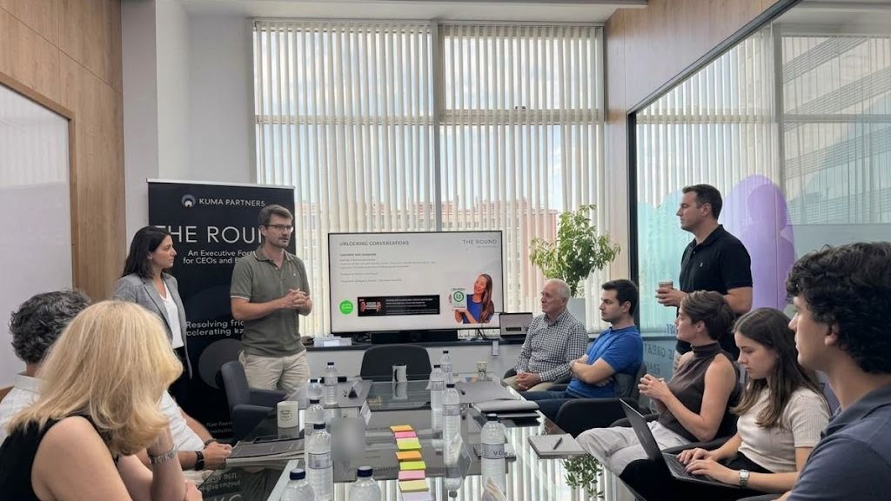

Monthly
The Executive Peer Board
A 6-hour in-person working session focused exclusively on members’ hardest active dilemmas. Rotates across members’ corporate headquarters in the Barcelona area.
Chatham House Rule · Non-Compete Guarantee